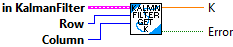
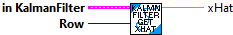
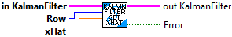

Correct the state estimate x-hat using the measurements in y.
Inputs:
- inKalmanFIlter -- filter data cluster
- u -- Same control input used in the last predict step.
- y -- Measurement vector.
Outputs:
- outKalmanFilter -- updated filter data cluster
- error -- If true, an error occured

Returns the steady-state Kalman gain matrix K.
Inputs:
- KalmanFilter -- filter data cluster
Outputs:
- K - The steady-state Kalman gain matrix K.

Returns an element of the steady-state Kalman gain matrix K.
Inputs:
- KalmanFilter -- filter data cluster
- row -- matrix row indiex (0-n)
- column -- matrix column index (0-n)
Outputs:
- K - The steady-state Kalman gain matrix K.
- Error -- value is TRUE if an error occured.

Returns the state estimate x-hat.
Inputs:
- KalmanFilter -- filter data cluster
Outputs:
- xHat - The state estimate x-hat.

Returns a single element of the state estimate x-hat.
Inputs:
- KalmanFilter -- filter data cluster
- row -- matrix row number (0-n)
Outputs:
- xHat - The single state estimate x-hat value.

A Kalman filter combines predictions from a model and measurements to give an estimate of the true system state. This is useful because many states cannot be measured directly as a result of sensor noise, or because the state is "hidden".
Kalman filters use a K gain matrix to determine whether to trust the model or measurements more. Kalman filter theory uses statistics to compute an optimal K gain which minimizes the sum of squares error in the state estimate. This K gain is used to correct the state estimate by some amount of the difference between the actual measurements and the measurements predicted by the model.
For more on the underlying math, read https://file.tavsys.net/control/controls-engineering-in-frc.pdf chapter 9 "Stochastic control theory".
Constructs a state-space observer with the given plant.
Inputs:
- states -- A Nat representing the states of the system.
- outputs -- A Nat representing the outputs of the system.
- plant -- The plant used for the prediction step.
- stateStdDevs -- Standard deviations of model states.
- measurementStdDevs -- Standard deviations of measurements.
- dtSeconds -- Nominal discretization timestep.
Outputs:
- KalmanFilter -- The kalman filter data cluster
- Error -- TRUE indicates an error has occured.

Project the model into the future with a new control input u.
Inputs:
- inKalmanFilter -- filter data cluster
- u -- New control input from controller.
- dtSeconds -- Timestep for prediction.
Outputs:
- outKalmanFilter -- updated filter data cluster
- error -- If value is TRUE, an error occured.

Resets xHat matrix to all zero
Inputs:
- inKalmanFIlter -- filter data cluster
Outpus:
- outKalmanFilter -- filter data cluster

Set initial state estimate x-hat.
Inputs:
- inKalmanFilter -- filter data cluster
- xhat -- The state estimate x-hat.
Outputs:
- outKalmanFilter -- updated filter data cluster
- sizeCoerced -- If TRUE, an unexpected error occured with the size of the input xHat

Sets a single row of the initial state estimate x-hat.
Inputs:
- inKalmanFilter -- filter data cluster
- xhat -- The state estimate x-hat.
- row -- matrix row number (0-n) to set.
Outputs:
- outKalmanFilter -- updated filter data cluster
- error -- If TRUE, an unexpected error occured